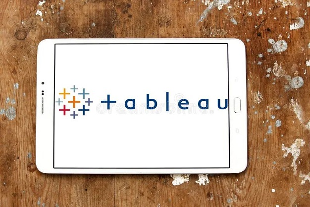

Data Analysis & Cleaning in Excel

In this project, I used Excel to clean and analyze data, applying various functions to streamline
the process. I focused on tasks like removing duplicates, standardizing values, handling missing
data, using PivotTables for summarization, and creating charts to visualize key insights and
trends.
Power BI Reports & Data Insights
In this project, I used Power BI to create interactive reports, applying my understanding of data
relationships and model structures. I utilized DAX for advanced calculations, applied
conditional formatting to highlight key insights, and ensured the visualizations effectively
communicated the data story.
Data Analysis & Visualization in Tableau

In this project, I used Tableau to create interactive visualizations and detailed reports,
leveraging Tableau’s data connection capabilities and drag-and-drop interface. I applied
calculated fields, created dynamic filters, and built dashboards that effectively displayed key
insights, while using advanced formatting and color techniques to highlight trends and patterns
in the data.
Data Management & Cleaning in SQL
In these projects, I worked with SQL in MySQL Workbench, applying my skills to create table and
store data efficiently. In one project, I focused on designing database structures and ensuring
proper data storage, while in the other, I tackled data cleaning tasks such as removing
duplicates, standardizing values, handling null and blank entries, and conducting exploratory
data analysis (EDA).
Python Projects: Web scraping, BMI Calculator & Automated File Sorting
Here I worked on several Python projects utilizing various
libraries.
One of these projects
involved web scraping, where I used libraries like BeautifulSoup
and requests to extract data from websites.
Additionally, I developed a BMI Calculator
that
calculates the Body Mass Index based on user input, categorizing individuals into different
weight categories such as underweight, normal weight, overweight, and obesity levels.
Another project I worked on is an Automated File Sorter, where I utilized the os and shutil
libraries to organize files in a directory based on their file extensions. The program
automatically sorts files into subfolders like "xlsx files", "image files", and "text
files",
making file management more efficient. This project helps automate the process of organizing
files, saving time and reducing manual errors.